library(dlookr)
library(rsample)
library(caret)
library(forcats)
library(corrplot)
library(rpart)
library(rpart.plot)
library(randomForest)
library(gbm)
library(xgboost)SBD3 1 Assignment Group 2
Introduction
We worked through every step of the project together including data exploration, cleaning, modelling and explainability. Our plan was to start with a simple linear regression as a baseline, then move to decision tree, random forest, gradient boosting, XGBoost so we could compare a wider range of models. After that, we picked one final model based on RMSE, MAE and R². Then we looked at which features mattered most, and used that model to predict our own future wages.
Libraries
First we load the important libraries.
Setup
We clear the workspace, turn off scientific notation so wage values are easier to read, and fix a global seed.
rm(list=ls())
options(scipen=999)
set.seed(123)Loading Data
The dataset is loaded from the provided .RData file. A first head() lets us check what the variables look like.
load("data_wage.RData")
head(data)Data Checks
Before modelling anything, we wanted to understand the dataset. We ran summary(), diagnose() and str() to check the variable types, the value ranges and whether there were missing values.
summary(data)diagnose(data)There are no missing values in the dataset and almost all numeric variables are binary 0/1 dummies. The only real numeric variable is the target wage.
str(data)All non-numeric variables are factors with levels.
colnames(data)Some of the Columns do not really add any value when considering the other variables in the dataset. A few columns just encode the “None of the above” answer (for example Notebooks_None, cloud_I.have.not.used.any.cloud.providers, ML_framework_None), but we kept them in for now and let the models decide.
Numeric
Target Variable
The target variable wage is right-skewed with a long tail and a large standard deviation. The mean is much higher than the median, which means a small group of very high earners is pulling the average up.
summary(data$wage) Min. 1st Qu. Median Mean 3rd Qu. Max.
0 6811 34780 53048 75687 551774 sd(data$wage)[1] 61960.76The boxplot and histogram below confirm the skew. We see a peak near zero and a long tail going up to several hundred thousand USD.
boxplot(data$wage, horizontal = TRUE, main = "Boxplot of Wage", xlab = "Wage")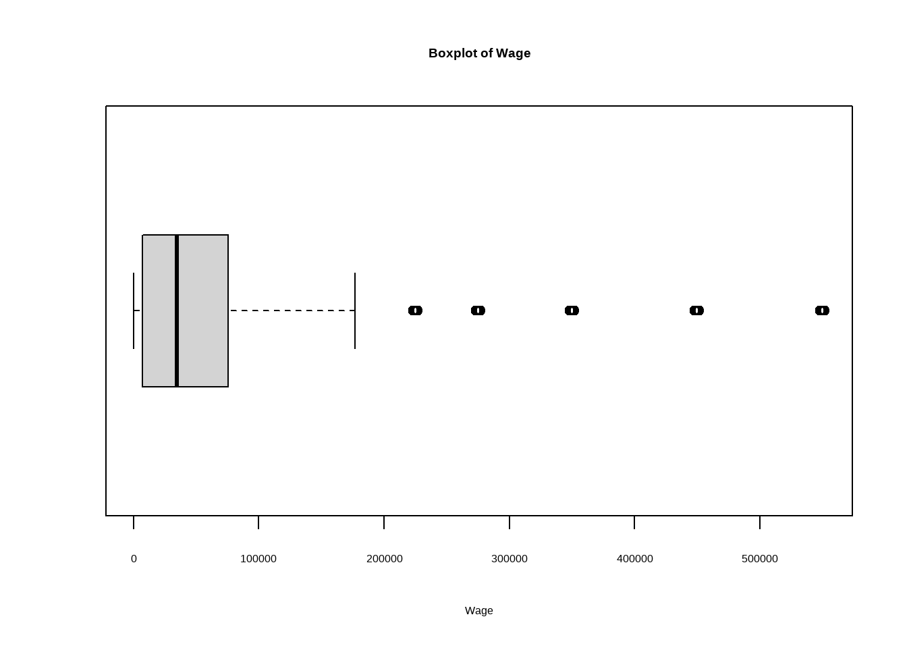
hist(data$wage, breaks = 50, main = "Histogram of Wage", xlab = "Wage")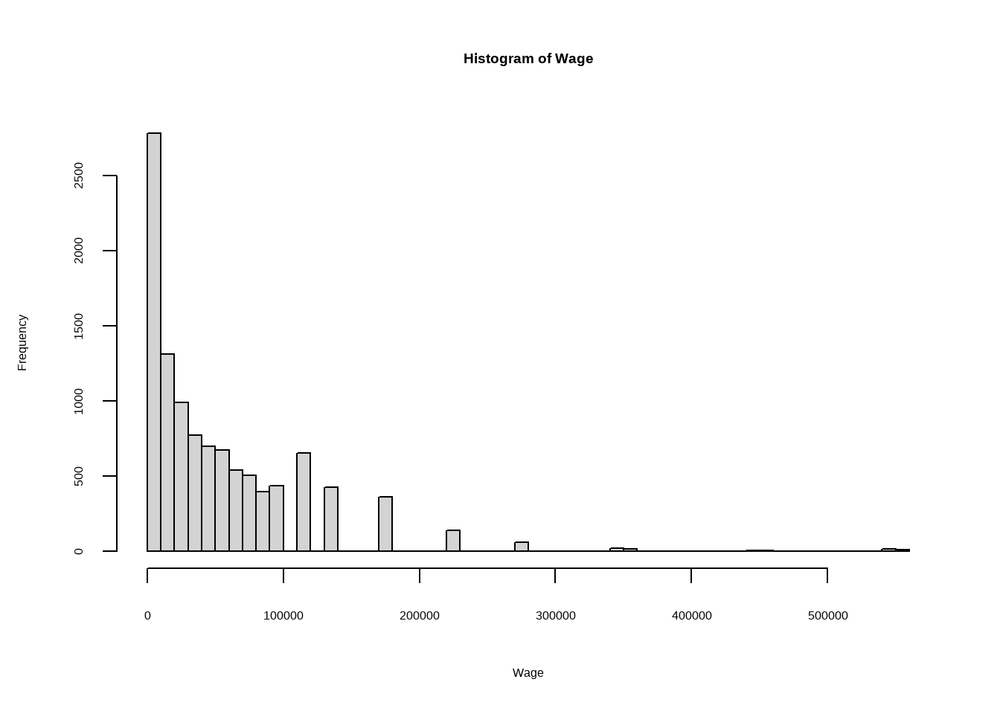
To check if a log transformation makes the target more symmetric, we plotted log(wage) for positive wages only. The shape is much closer to normal, so a log model is worth trying.
# Log Wage
hist(log(data$wage[data$wage > 0]), breaks = 50, main = "Histogram of log(wage)")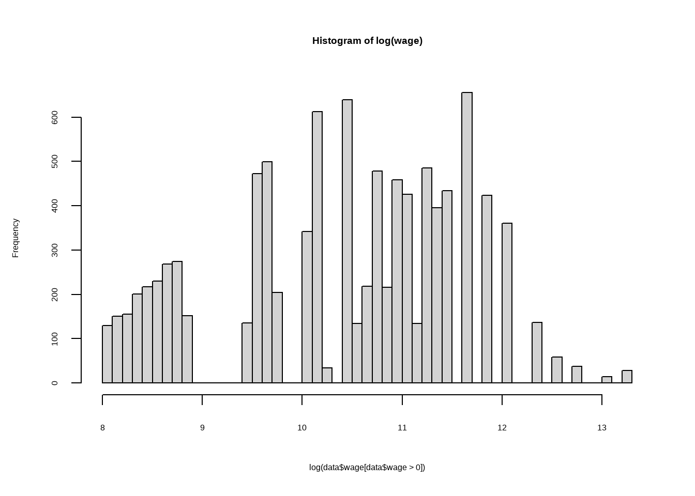
boxplot(log(data$wage[data$wage > 0]), horizontal = TRUE)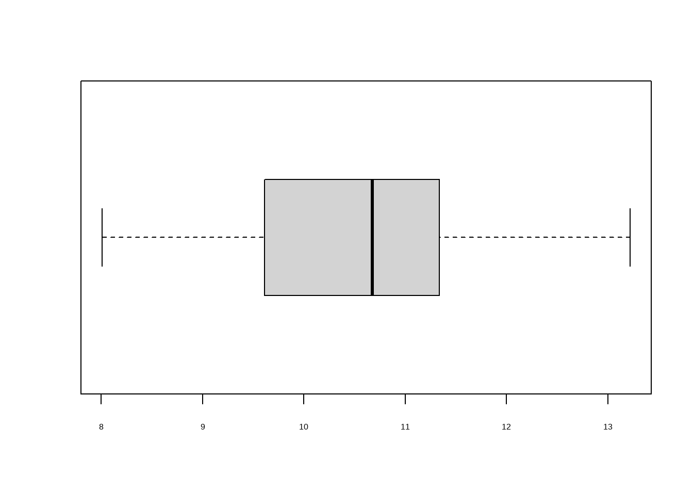
We then looked at how many respondents reported a wage of zero. These could be students, unemployed people or interns, but we cannot tell from the data. Because the share of zeros is non-trivial, we decided to also build a version of the dataset without them and to compare results.
# 0 in Target variable "wage"
sum(data$wage == 0)[1] 1000prop.table(table(data$wage == 0))
FALSE TRUE
0.9074845 0.0925155 data_no_0_wage <- data[data$wage > 0, ]After removing the zeros, the distribution still has a long right tail but no longer has the spike at zero.
boxplot(data_no_0_wage$wage, horizontal = TRUE, main = "Boxplot of Wage", xlab = "Wage")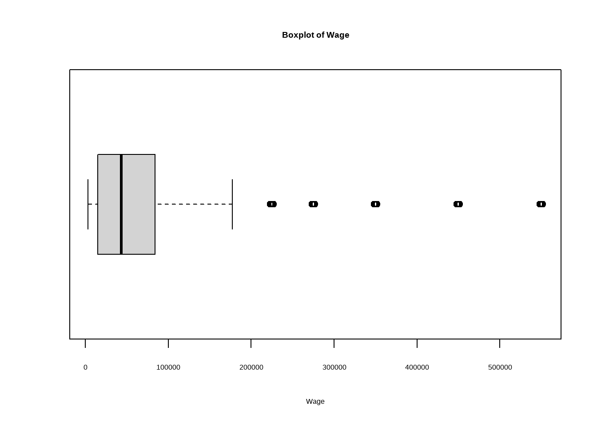
hist(data_no_0_wage$wage, breaks = 50, main = "Histogram of Wage", xlab = "Wage")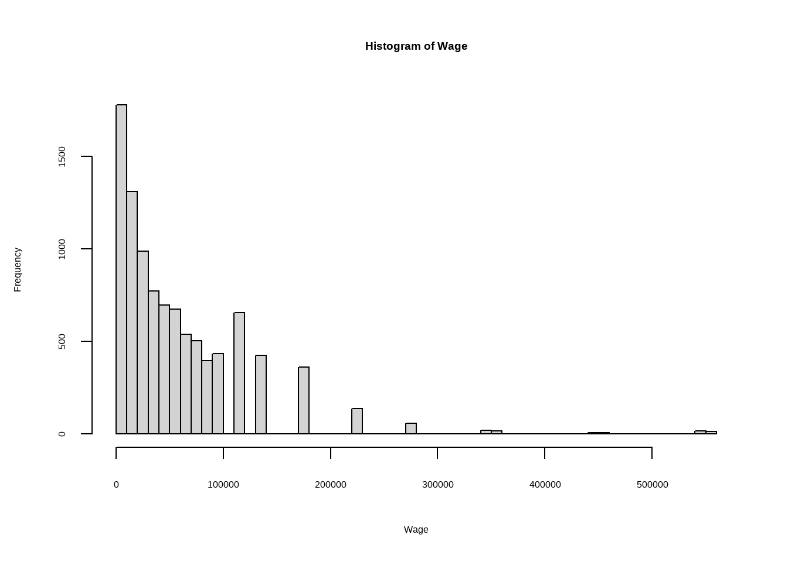
Features
The numeric features other than wage are all 0/1 dummies coming from the multi-select survey questions. We checked one of them, Notebooks_None, as an example. The frequency tables looked similar for the other one-hot variables.
#Frequency
print(table(data$Notebooks_None))
0 1
6706 4103 #Proportions
print(prop.table(table(data$Notebooks_None)))
0 1
0.6204089 0.3795911 Factors
For the categorical variables, we checked the levels, frequencies and proportions, and whether they were ordered. By default they were all unordered. We discussed which ones actually have a natural ranking (such as age or years of experience) so we could later set them as ordered factors.
Two variables in particular gave us some discussion:
ML_atwork: at first we thought “I do not know” was useless, but it could be a meaningful answer (interns, juniors, people who don’t work). We could not agree on a clean ordering for the other categories either, so we kept this one unordered.Do.you.consider.yourself.to.be.a.data.scientist.: this is purely subjective and depends on how the respondent feels about themselves on a given day. We decided to drop it later in the cleaning step.
#Levels
print(levels(data$gender))[1] "Female" "Male"
[3] "Prefer not to say" "Prefer to self-describe"#Frequency
print(table(data$gender))
Female Male Prefer not to say
1571 9135 72
Prefer to self-describe
31 #Proportions
print(round(prop.table(table(data$gender)), 2))
Female Male Prefer not to say
0.15 0.85 0.01
Prefer to self-describe
0.00 #Ordered
print(is.ordered(data$gender))[1] FALSEData Cleaning
Order Factors
We re-coded the factors that have a natural ranking as ordered factors. It gives the linear regression a sensible ordering when it builds dummy contrasts, and it also makes it easier to read the variable summaries. The variables we treated as ordered are listed below. The other factors stay unordered because their categories don’t have a clear hierarchy (for example gender, country, undergraduate major, job role, industry, programming language, ML at work).
# Gender
levels(data$gender)[1] "Female" "Male"
[3] "Prefer not to say" "Prefer to self-describe"data$gender <- factor(data$gender, ordered = FALSE)# Age
levels(data$age) [1] "18-21" "22-24" "25-29" "30-34" "35-39" "40-44" "45-49" "50-54" "55-59"
[10] "60-69" "70-79" "80+" data$age <- factor(
data$age,
levels = c(
"18-21", "22-24", "25-29", "30-34", "35-39", "40-44", "45-49", "50-54", "55-59", "60-69", "70-79", "80+"
),
ordered = TRUE
)# Country
levels(data$country) [1] "Argentina"
[2] "Australia"
[3] "Austria"
[4] "Bangladesh"
[5] "Belarus"
[6] "Belgium"
[7] "Brazil"
[8] "Canada"
[9] "Chile"
[10] "China"
[11] "Colombia"
[12] "Czech Republic"
[13] "Denmark"
[14] "Egypt"
[15] "Finland"
[16] "France"
[17] "Germany"
[18] "Greece"
[19] "Hong Kong (S.A.R.)"
[20] "Hungary"
[21] "I do not wish to disclose my location"
[22] "India"
[23] "Indonesia"
[24] "Iran, Islamic Republic of..."
[25] "Ireland"
[26] "Israel"
[27] "Italy"
[28] "Japan"
[29] "Kenya"
[30] "Malaysia"
[31] "Mexico"
[32] "Morocco"
[33] "Netherlands"
[34] "New Zealand"
[35] "Nigeria"
[36] "Norway"
[37] "Other"
[38] "Pakistan"
[39] "Peru"
[40] "Philippines"
[41] "Poland"
[42] "Portugal"
[43] "Republic of Korea"
[44] "Romania"
[45] "Russia"
[46] "Singapore"
[47] "South Africa"
[48] "South Korea"
[49] "Spain"
[50] "Sweden"
[51] "Switzerland"
[52] "Thailand"
[53] "Tunisia"
[54] "Turkey"
[55] "Ukraine"
[56] "United Kingdom of Great Britain and Northern Ireland"
[57] "United States of America"
[58] "Viet Nam" data$country <- factor(data$country, ordered = FALSE)# Education
levels(data$education)[1] "Bachelor’s degree"
[2] "Doctoral degree"
[3] "I prefer not to answer"
[4] "Master’s degree"
[5] "Professional degree"
[6] "Some college/university study without earning a bachelor’s degree"data$education <- factor(
data$education,
levels = c(
"I prefer not to answer",
"Some college/university study without earning a bachelor’s degree",
"Bachelor’s degree",
"Master’s degree",
"Professional degree",
"Doctoral degree"
),
ordered = FALSE
)# undergraduate_major
levels(data$undergraduate_major) [1] "A business discipline (accounting, economics, finance, etc.)"
[2] "Computer science (software engineering, etc.)"
[3] "Engineering (non-computer focused)"
[4] "Environmental science or geology"
[5] "Fine arts or performing arts"
[6] "Humanities (history, literature, philosophy, etc.)"
[7] "I never declared a major"
[8] "Information technology, networking, or system administration"
[9] "Mathematics or statistics"
[10] "Medical or life sciences (biology, chemistry, medicine, etc.)"
[11] "Other"
[12] "Physics or astronomy"
[13] "Social sciences (anthropology, psychology, sociology, etc.)" data$undergraduate_major <- factor(data$undergraduate_major, ordered = FALSE)# job_role
levels(data$job_role) [1] "Business Analyst" "Chief Officer"
[3] "Consultant" "Data Analyst"
[5] "Data Engineer" "Data Journalist"
[7] "Data Scientist" "DBA/Database Engineer"
[9] "Developer Advocate" "Manager"
[11] "Marketing Analyst" "Other"
[13] "Principal Investigator" "Product/Project Manager"
[15] "Research Assistant" "Research Scientist"
[17] "Salesperson" "Software Engineer"
[19] "Statistician" "Student" data$job_role <- factor(data$job_role, ordered = FALSE)# industry
levels(data$industry) [1] "Academics/Education"
[2] "Accounting/Finance"
[3] "Broadcasting/Communications"
[4] "Computers/Technology"
[5] "Energy/Mining"
[6] "Government/Public Service"
[7] "Hospitality/Entertainment/Sports"
[8] "I am a student"
[9] "Insurance/Risk Assessment"
[10] "Manufacturing/Fabrication"
[11] "Marketing/CRM"
[12] "Medical/Pharmaceutical"
[13] "Military/Security/Defense"
[14] "Non-profit/Service"
[15] "Online Business/Internet-based Sales"
[16] "Online Service/Internet-based Services"
[17] "Other"
[18] "Retail/Sales"
[19] "Shipping/Transportation" data$industry <- factor(data$industry, ordered = FALSE)# years_experience
levels(data$years_experience) [1] "0-1" "1-2" "11-15" "15-20" "2-3" "20-25" "25-30" "3-4" "30 +"
[10] "4-5" "5-11" data$years_experience <- factor(
data$years_experience,
levels = c(
"0-1", "1-2", "2-3", "3-4", "4-5", "5-11", "11-15", "15-20", "20-25", "25-30", "30 +"
),
ordered = TRUE
)We also wanted to order this variable, but we could not agree, as the ordering depends on the perspective taken.
# ML_atwork
levels(data$ML_atwork)[1] "I do not know"
[2] "No (we do not use ML methods)"
[3] "We are exploring ML methods (and may one day put a model into production)"
[4] "We have well established ML methods (i.e., models in production for more than 2 years)"
[5] "We recently started using ML methods (i.e., models in production for less than 2 years)"
[6] "We use ML methods for generating insights (but do not put working models into production)"data$ML_atwork <- factor(
data$ML_atwork,
levels = c(
"I do not know",
"No (we do not use ML methods)",
"We are exploring ML methods (and may one day put a model into production)",
"We use ML methods for generating insights (but do not put working models into production)",
"We recently started using ML methods (i.e., models in production for less than 2 years)",
"We have well established ML methods (i.e., models in production for more than 2 years)"
),
ordered = FALSE
)We also wanted to order this variable, but we could not agree, as the ordering depends on the perspective taken.
# Programming_language_used_most_often
levels(data$Programming_language_used_most_often) [1] "Bash" "C/C++" "C#/.NET"
[4] "Go" "Java" "Javascript/Typescript"
[7] "Julia" "MATLAB" "Other"
[10] "PHP" "Python" "R"
[13] "Ruby" "SAS/STATA" "Scala"
[16] "SQL" "Visual Basic/VBA" data$Programming_language_used_most_often <- factor(data$Programming_language_used_most_often, ordered = FALSE)# percent_actively.coding
levels(data$percent_actively.coding)[1] "0% of my time" "1% to 25% of my time" "100% of my time"
[4] "25% to 49% of my time" "50% to 74% of my time" "75% to 99% of my time"data$percent_actively.coding <- factor(
data$percent_actively.coding,
levels = c(
"0% of my time", "1% to 25% of my time", "25% to 49% of my time", "50% to 74% of my time", "75% to 99% of my time", "100% of my time"
),
ordered = TRUE
)# How.long.have.you.been.writing.code.to.analyze.data.
levels(data$How.long.have.you.been.writing.code.to.analyze.data.) [1] "< 1 year"
[2] "1-2 years"
[3] "10-20 years"
[4] "20-30 years"
[5] "3-5 years"
[6] "30-40 years"
[7] "40+ years"
[8] "5-10 years"
[9] "I have never written code and I do not want to learn"
[10] "I have never written code but I want to learn" data$How.long.have.you.been.writing.code.to.analyze.data. <- factor(
data$How.long.have.you.been.writing.code.to.analyze.data.,
levels = c(
"I have never written code and I do not want to learn",
"I have never written code but I want to learn",
"< 1 year",
"1-2 years",
"3-5 years",
"5-10 years",
"10-20 years",
"20-30 years",
"30-40 years",
"40+ years"
),
ordered = TRUE
)# For.how.many.years.have.you.used.machine.learning.methods..at.work.or.in.school..
levels(data$For.how.many.years.have.you.used.machine.learning.methods..at.work.or.in.school..) [1] "< 1 year"
[2] "1-2 years"
[3] "10-15 years"
[4] "2-3 years"
[5] "20+ years"
[6] "3-4 years"
[7] "4-5 years"
[8] "5-10 years"
[9] "I have never studied machine learning and I do not plan to"
[10] "I have never studied machine learning but plan to learn in the future"data$For.how.many.years.have.you.used.machine.learning.methods..at.work.or.in.school.. <- factor(
data$For.how.many.years.have.you.used.machine.learning.methods..at.work.or.in.school..,
levels = c(
"I have never studied machine learning and I do not plan to",
"I have never studied machine learning but plan to learn in the future",
"< 1 year",
"1-2 years",
"2-3 years",
"3-4 years",
"4-5 years",
"5-10 years",
"10-15 years",
"15-20 years",
"20+ years"
),
ordered = TRUE
)# Do.you.consider.yourself.to.be.a.data.scientist.
levels(data$Do.you.consider.yourself.to.be.a.data.scientist.)[1] "Definitely not" "Definitely yes" "Maybe" "Probably not"
[5] "Probably yes" data$Do.you.consider.yourself.to.be.a.data.scientist. <- factor(
data$Do.you.consider.yourself.to.be.a.data.scientist.,
levels = c(
"Definitely not",
"Probably not",
"Maybe",
"Probably yes",
"Definitely yes"
),
ordered = TRUE
)Outliers
The wage distribution has a heavy right tail, but those high values are not data errors. They are real high earners. Tree-based models are not very sensitive to extreme values, and we also test a log-transformed version of the target, so we did not trim or cap any observations.
Exploratory Data Analysis
Variable Correlation
We started the EDA with a correlation matrix of the numeric variables. Since most of them are 0/1 dummies, we did quick check using the Pearson correlations. We then filtered for the strongest pairwise correlations (absolute value above 0.5) so we could see at a glance which variables move together.
# Select numeric variables
num_data <- data[, sapply(data, is.numeric)]
# Correlation matrix between variables
cor_matrix <- cor(num_data)
# Plot
corrplot(
cor_matrix,
method = "color",
type = "upper",
tl.pos = "n",
main = "Correlation Matrix of Numeric Variabels"
)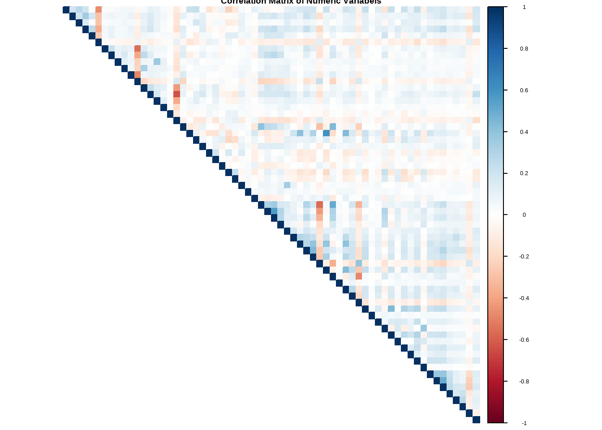
# Higher correlations only (Threshold: > 0.5 or < -0.5)
high_corr <- which(
abs(cor_matrix) > 0.5 &
upper.tri(cor_matrix),
arr.ind = TRUE
)
high_corr <- data.frame(
Var1 = rownames(cor_matrix)[high_corr[,1]],
Var2 = colnames(cor_matrix)[high_corr[,2]],
Correlation = cor_matrix[high_corr]
)
high_corr <- high_corr[
order(-abs(high_corr$Correlation)),
]
head(high_corr, 20)Target Correlation
Because the goal of the project is to predict wage, we also computed the correlation of every numeric variable with the target. The strongest individual correlations are weak (none of them very close to 1), which already tells us that no single dummy variable is going to explain wages on its own. The wage signal is spread across many variables, which is exactly the kind of situation where tree methods usually work well.
cor_target <- cor(num_data, use = "complete.obs")[, "wage"]
cor_target <- cor_target[names(cor_target) != "wage"]
cor_target_df <- data.frame(
Variable = names(cor_target),
Correlation = cor_target
)
cor_target_df <- cor_target_df[
order(-abs(cor_target_df$Correlation)),
]
rownames(cor_target_df) <- NULL
head(cor_target_df, 20)Data Preparation
Two cleaning steps before splitting the data:
- The
countryvariable has more than 53 levels. TherandomForestpackage cannot handle categorical predictors with more than 53 categories, so we usedfct_lump()to keep the top 52 countries and group the rest into “Other”. - We dropped
Do.you.consider.yourself.to.be.a.data.scientist.because it is a subjective self-assessment that we don’t trust as a wage predictor.
data_clean <- data
data_clean$country <- fct_lump(data_clean$country, n = 52)
data_clean$Do.you.consider.yourself.to.be.a.data.scientist. <- NULLGeneral Train Test Split
We split the data 70/30 into training and test sets. To handle the wage = 0 spike and the right skew, we built three parallel versions of the train/test sets and ran every model on each of them:
- Version A — wage (all): original target, including the zeros.
- Version B — wage (no zeros): drop respondents with wage = 0. The idea is that these may be people who are not really earning a salary (students, unemployed) and may pull the model in odd directions.
- Version C — log(wage): the log-transformed target on positive wages only. Predictions are back-transformed with
exp()before computing the error metrics, so the numbers are comparable in USD.
This way we avoid committing to one preprocessing choice up front and let the test-set results decide.
#Split the Data
split <- initial_split(data_clean, prop = 0.7)
data_train <- training(split)
data_test <- testing(split)
# Version A: keep wage = 0
train_all <- data_train
test_all <- data_test
# Version B: remove wage = 0
train_pos <- train_all[train_all$wage > 0, ]
test_pos <- test_all[test_all$wage > 0, ]
# Version C: log wage, based on positive wages only
train_log <- train_pos
test_log <- test_pos
train_log$log_wage <- log(train_log$wage)
test_log$log_wage <- log(test_log$wage)
# Check the distribution in the Target Variable for all 3 Datasets
# Version A:
hist(train_all$wage) 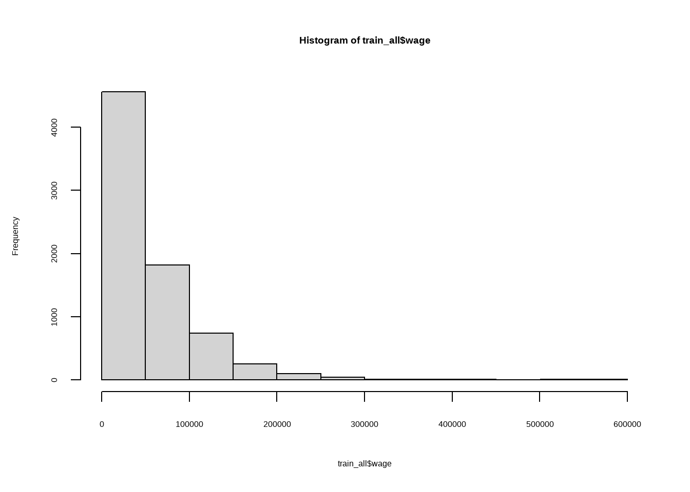
hist(test_all$wage) 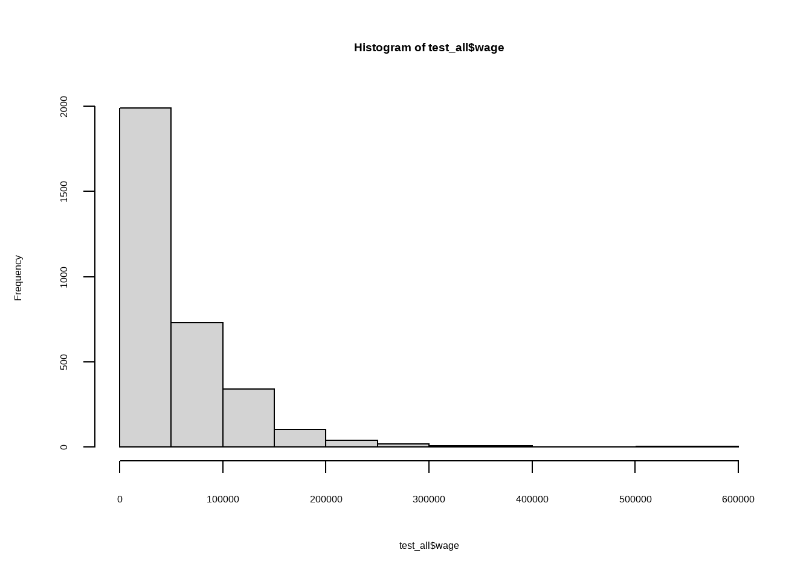
# Version B:
hist(train_pos$wage)hist(test_pos$wage)# Version C:
hist(train_log$wage)hist(test_log$wage)Models
We trained five model families: linear regression as a benchmark, decision tree, random forest, gradient boosting (gbm) and XGBoost. For every model we ran the three target variants (all, no zeros, log) and compared them on the same test set using RMSE, MAE and R². RMSE counts larger errors more, MAE gives an average error in USD that is easier to read, and R² shows how much variance the model explains.
Linear Regression
We start with linear regression because it is simple, fast and easy to interpret. It also gives us a baseline, any more complex model has to beat it to be worth keeping.
# Model 1: wage (all)
set.seed(123)
lm_all <- lm(wage ~ ., data = train_all)
# Model 2: wage (no zeros)
set.seed(123)
lm_pos <- lm(wage ~ ., data = train_pos)
# Model 3: log(wage)
set.seed(123)
lm_log <- lm(log_wage ~ . - wage, data = train_log)# Predictions
pred_all <- predict(lm_all, newdata = test_all)
pred_pos <- predict(lm_pos, newdata = test_pos)
pred_log <- predict(lm_log, newdata = test_log)
pred_log_wage <- exp(pred_log) # back-transformresults_lm <- data.frame(
Model = c("LM - wage (all)", "LM - wage (no zeros)", "LM - log(wage)"),
RMSE = c(
RMSE(pred_all, test_all$wage),
RMSE(pred_pos, test_pos$wage),
RMSE(pred_log_wage, test_pos$wage)
),
MAE = c(
MAE(pred_all, test_all$wage),
MAE(pred_pos, test_pos$wage),
MAE(pred_log_wage, test_pos$wage)
),
R2 = c(
R2(pred_all, test_all$wage),
R2(pred_pos, test_pos$wage),
R2(pred_log_wage, test_pos$wage)
)
)
results_lmDecision Tree
A single decision tree is the next step up. It can pick up non-linear patterns and interactions that linear regression misses, and the splits are easy to read. The downside is high variance, because a single tree often overfits and is sensitive to the exact training sample. We also decided to use “anova” method.
# Model 1: wage (all)
set.seed(123)
tree_all <- rpart(
wage ~ .,
data = train_all,
method = "anova"
)
# Model 2: wage (no zeros)
set.seed(123)
tree_pos <- rpart(
wage ~ .,
data = train_pos,
method = "anova"
)
# Model 3: log(wage)
set.seed(123)
tree_log <- rpart(
log_wage ~ . - wage,
data = train_log,
method = "anova"
)pred_tree_all <- predict(tree_all, newdata = test_all)
pred_tree_pos <- predict(tree_pos, newdata = test_pos)
pred_tree_log <- predict(tree_log, newdata = test_log)
pred_tree_log_wage <- exp(pred_tree_log)results_tree <- data.frame(
Model = c("Tree - wage (all)", "Tree - wage (no zeros)", "Tree - log(wage)"),
RMSE = c(
RMSE(pred_tree_all, test_all$wage),
RMSE(pred_tree_pos, test_pos$wage),
RMSE(pred_tree_log_wage, test_pos$wage)
),
MAE = c(
MAE(pred_tree_all, test_all$wage),
MAE(pred_tree_pos, test_pos$wage),
MAE(pred_tree_log_wage, test_pos$wage)
),
R2 = c(
R2(pred_tree_all, test_all$wage),
R2(pred_tree_pos, test_pos$wage),
R2(pred_tree_log_wage, test_pos$wage)
)
)
results_treeRandom Forest
The random forest fixes the high-variance problem of a single tree by averaging many trees, each trained on a bootstrap sample with a random subset of features. This usually gives a clear boost in accuracy on tabular data with mixed numeric and categorical predictors, which is exactly our situation. We grew 1,000 trees per model and turned on importance = TRUE so we can rank the features later.
# Model 1: wage (all)
set.seed(123)
rf_all <- randomForest(
wage ~ .,
data = train_all,
ntree = 1000,
importance = TRUE
)
# Model 2: wage (no zeros)
set.seed(123)
rf_pos <- randomForest(
wage ~ .,
data = train_pos,
ntree = 1000,
importance = TRUE
)
# Model 3: log(wage)
set.seed(123)
rf_log <- randomForest(
log_wage ~ . - wage,
data = train_log,
ntree = 1000,
importance = TRUE
)pred_rf_all <- predict(rf_all, newdata = test_all)
pred_rf_pos <- predict(rf_pos, newdata = test_pos)
pred_rf_log <- predict(rf_log, newdata = test_log)
pred_rf_log_wage <- exp(pred_rf_log)results_rf <- data.frame(
Model = c("RF - wage (all)", "RF - wage (no zeros)", "RF - log(wage)"),
RMSE = c(
RMSE(pred_rf_all, test_all$wage),
RMSE(pred_rf_pos, test_pos$wage),
RMSE(pred_rf_log_wage, test_pos$wage)
),
MAE = c(
MAE(pred_rf_all, test_all$wage),
MAE(pred_rf_pos, test_pos$wage),
MAE(pred_rf_log_wage, test_pos$wage)
),
R2 = c(
R2(pred_rf_all, test_all$wage),
R2(pred_rf_pos, test_pos$wage),
R2(pred_rf_log_wage, test_pos$wage)
)
)
results_rfWe also looked at variable importance for the random forest trained on the full wage data (rf_all). The two metrics we used are %IncMSE and IncNodePurity. They tend to agree on the top variables but the ordering can be slightly different. We use %IncMSE later as the criterion for our reduced final model.
importance(rf_all)varImpPlot(
rf_all,
n.var = 15,
cex = 0.7,
main = "Top 15 Important Variables"
)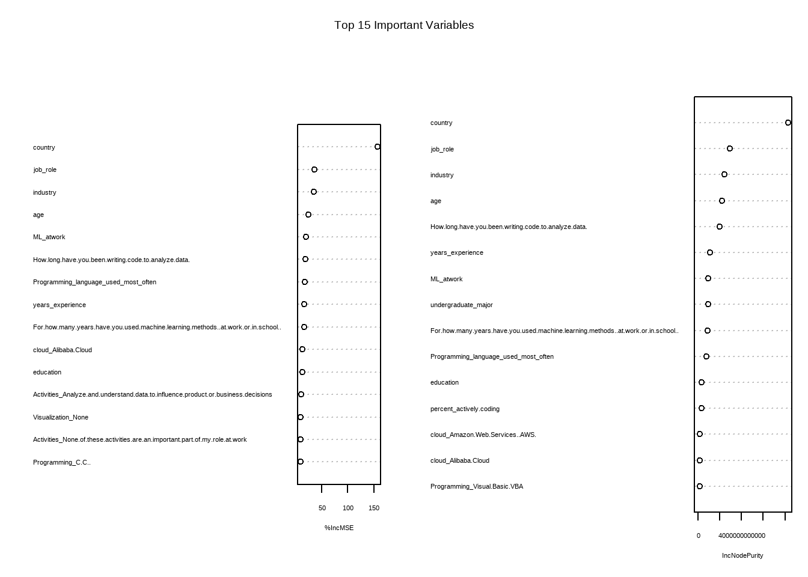
importance_df <- data.frame(
Variable = rownames(importance(rf_all)),
IncMSE = importance(rf_all)[, "%IncMSE"],
NodePurity = importance(rf_all)[, "IncNodePurity"]
)
rownames(importance_df) <- NULL
top_mse <- importance_df[
order(-importance_df$IncMSE),
]
top_mse <- head(top_mse, 15)
top_purity <- importance_df[
order(-importance_df$NodePurity),
]
top_purity <- head(top_purity, 15)
par(mar = c(5, 25, 4, 2))
barplot(
rev(top_mse$IncMSE),
names.arg = rev(top_mse$Variable),
horiz = TRUE,
las = 1,
cex.names = 0.7,
main = "Top 15 Variables by % Increase in MSE",
xlab = "% Increase in MSE"
)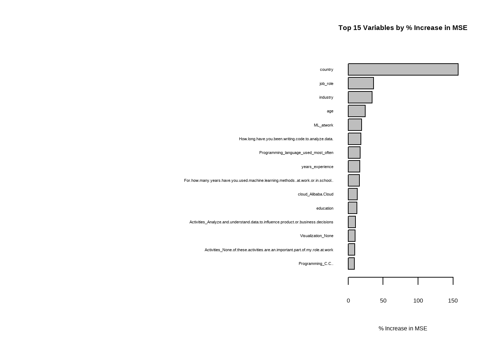
par(mar = c(5, 25, 4, 2))
barplot(
rev(top_purity$NodePurity),
names.arg = rev(top_purity$Variable),
horiz = TRUE,
las = 1,
cex.names = 0.7,
main = "Top 15 Variables by Node Purity",
xlab = "Increase in Node Purity"
)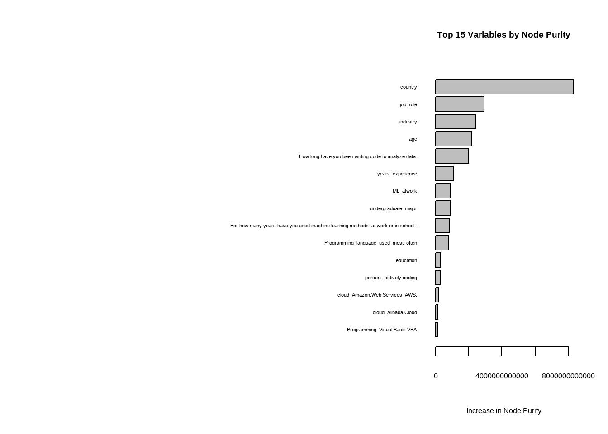
Gradient Boosting Models
Gradient boosting builds trees sequentially and each new tree tries to correct the errors of the previous ones. This often improves performance, but it is also more sensitive to the hyper-parameters. We used a Gaussian loss (regression), 1,000 trees, an interaction depth of 4, and a shrinkage of 0.03, a slow learning rate that usually generalises better than a fast one.
# Model 1: wage (all)
set.seed(123)
gbm_all <- gbm(
formula = wage ~ .,
data = train_all,
distribution = "gaussian",
n.trees = 1000,
interaction.depth = 4,
shrinkage = 0.03,
verbose = FALSE
)
# Model 2: wage (no zeros)
set.seed(123)
gbm_pos <- gbm(
wage ~ .,
data = train_pos,
distribution = "gaussian",
n.trees = 1000,
interaction.depth = 4,
shrinkage = 0.03,
verbose = FALSE
)
# Model 3: log(wage)
set.seed(123)
gbm_log <- gbm(
log_wage ~ . - wage,
data = train_log,
distribution = "gaussian",
n.trees = 1000,
interaction.depth = 4,
shrinkage = 0.03,
verbose = FALSE
)pred_gbm_all <- predict(gbm_all, test_all, n.trees = 1000)
pred_gbm_pos <- predict(gbm_pos, test_pos, n.trees = 1000)
pred_gbm_log <- predict(gbm_log, test_log, n.trees = 1000)
pred_gbm_log_wage <- exp(pred_gbm_log)results_gbm <- data.frame(
Model = c("GBM - wage (all)", "GBM - wage (no zeros)", "GBM - log(wage)"),
RMSE = c(
RMSE(pred_gbm_all, test_all$wage),
RMSE(pred_gbm_pos, test_pos$wage),
RMSE(pred_gbm_log_wage, test_pos$wage)
),
MAE = c(
MAE(pred_gbm_all, test_all$wage),
MAE(pred_gbm_pos, test_pos$wage),
MAE(pred_gbm_log_wage, test_pos$wage)
),
R2 = c(
R2(pred_gbm_all, test_all$wage),
R2(pred_gbm_pos, test_pos$wage),
R2(pred_gbm_log_wage, test_pos$wage)
)
)
results_gbmThe summary() of a gbm object prints relative influence for each variable, which gives us a second view of feature importance to compare with the random forest.
summary(gbm_all)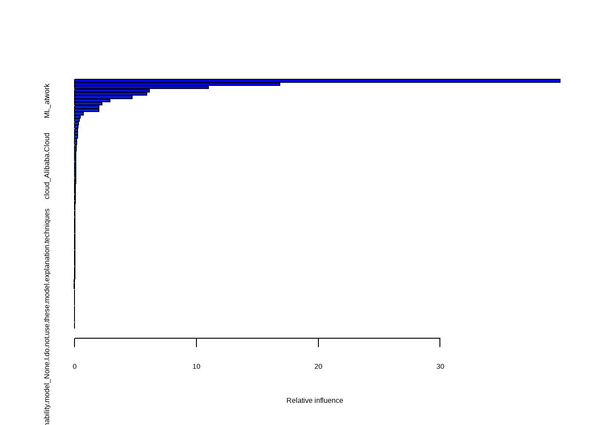
XG Boost
XGBoost is another gradient boosting library and a faster implementation. It does not accept a formula directly and it needs a numeric matrix, so we wrote a small helper that builds the model matrix, trains the model, predicts on the test set and optionally transforms the log predictions. We use the same three target versions as before.
train_xgb_model <- function(train_data, test_data, target, log_model = FALSE) {
x_train <- model.matrix(
as.formula(paste(target, "~ .")),
data = train_data
)[ , -1]
x_test <- model.matrix(
as.formula(paste(target, "~ .")),
data = test_data
)[ , -1]
y_train <- train_data[[target]]
model <- xgboost(
data = x_train,
label = y_train,
objective = "reg:squarederror",
nrounds = 1000,
max_depth = 4,
eta = 0.05,
subsample = 0.8,
colsample_bytree = 0.8,
verbose = 0
)
pred <- predict(model, x_test)
if (log_model) {
pred <- exp(pred)
}
return(list(model = model, pred = pred))
}# XGBoost 1: wage all
set.seed(123)
xgb_all <- train_xgb_model(
train_all,
test_all,
target = "wage"
)
# XGBoost 2: wage no zeros
set.seed(123)
xgb_pos <- train_xgb_model(
train_pos,
test_pos,
target = "wage"
)
# XGBoost 3: log wage
set.seed(123)
xgb_log <- train_xgb_model(
train_log[, !(names(train_log) %in% "wage")],
test_log[, !(names(test_log) %in% "wage")],
target = "log_wage",
log_model = TRUE
)results_xgb <- data.frame(
Model = c("XGB - wage (all)", "XGB - wage (no zeros)", "XGB - log(wage)"),
RMSE = c(
RMSE(xgb_all$pred, test_all$wage),
RMSE(xgb_pos$pred, test_pos$wage),
RMSE(xgb_log$pred, test_log$wage)
),
MAE = c(
MAE(xgb_all$pred, test_all$wage),
MAE(xgb_pos$pred, test_pos$wage),
MAE(xgb_log$pred, test_log$wage)
),
R2 = c(
R2(xgb_all$pred, test_all$wage),
R2(xgb_pos$pred, test_pos$wage),
R2(xgb_log$pred, test_log$wage)
)
)
results_xgbXGBoost has its own importance function (xgb.importance) which we plotted for the top 20 features. This gives us a third view of feature importance to put alongside the random forest and GBM rankings.
importance_xgb <- xgb.importance(
feature_names = xgb_all$model$feature_names,
model = xgb_all$model
)
xgb.plot.importance(importance_xgb, top_n = 20)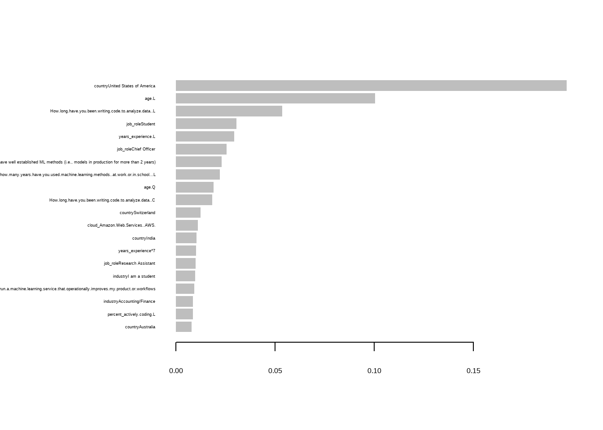
Model Comparison
We stacked the results of all 15 model variants of 5 algorithms x 3 target versions and sorted by each metric. RMSE, MAE and R² mostly agreed on the ranking, but it was useful to look at all three because RMSE punishes the few very large errors more, while MAE is closer to the typical USD error a user would see.
The random forest trained on the full target (RF - wage (all)) came out best on RMSE and was very competitive on MAE and R². Gradient boosting was also strong, but the random forest was more stable across the three target versions, which made us trust it more. We picked it as the final model.
results_all <- rbind(
results_lm,
results_tree,
results_rf,
results_gbm,
results_xgb
)
results_all[order(results_all$RMSE), ]results_all[order(results_all$MAE), ]results_all[order(-results_all$R2), ]Final Model
The final model is the random forest trained on the full training set train_all, using the original wage as target. We re-train it explicitly here so the rest of the report works with one clear final object rf_final.
# Model Final: wage (all)
set.seed(123)
rf_final <- randomForest(
wage ~ .,
data = train_all,
ntree = 1000,
importance = TRUE
)pred_rf_final <- predict(rf_final, newdata = test_all)results_rf_final <- data.frame(
Model = c("RF Final - wage (all)"),
RMSE = c(
RMSE(pred_rf_final, test_all$wage)
),
MAE = c(
MAE(pred_rf_final, test_all$wage)
),
R2 = c(
R2(pred_rf_final, test_all$wage)
)
)
results_rf_finalThe variable importance plot below shows which features drive the wage predictions.
importance(rf_final)varImpPlot(
rf_final,
n.var = 15,
cex = 0.7,
main = "Top 15 Important Variables"
)
The top features are mostly about country, age, years of experience and how long the respondent has been writing code which basically matches what we would expect intuitively. Some of the framework variables also show up, which may inidcate that the type of stack a respondent uses correlates with how senior or specialised their role is.
Feature choice
We then were wondering if we actually need all 76 predictors since a smaller model is easier to explain, faster to train and less likely to be confused by noise. We ranked the features by %IncMSE from rf_final and retrained the random forest using only the top 15.
importance_final <- data.frame(
Variable = rownames(importance(rf_final)),
IncMSE = importance(rf_final)[, "%IncMSE"],
NodePurity = importance(rf_final)[, "IncNodePurity"]
)
rownames(importance_final) <- NULL
top_mse_final <- importance_final[
order(-importance_final$IncMSE),
]
top_mse_final <- head(top_mse_final, 15)
top_mse_finaltop_vars <- as.character(top_mse_final$Variable)
train_top <- train_all[, c("wage", top_vars)]
test_top <- test_all[, c("wage", top_vars)]
set.seed(123)
rf_top <- randomForest(
wage ~ .,
data = train_top,
ntree = 1000,
importance = TRUE
)pred_rf_top <- predict(rf_top, newdata = test_top)results_rf_top <- data.frame(
Model = c("RF Final - Top 15 by %IncMSE"),
RMSE = c(
RMSE(pred_rf_top, test_top$wage)
),
MAE = c(
MAE(pred_rf_top, test_top$wage)
),
R2 = c(
R2(pred_rf_top, test_top$wage)
)
)
results_rf_topFinal Comparison: All Features vs. Top Features
We put the all features and the top 15 random forests side by side and sorted by each metric so we can see the comparison. If the reduced model is comparable, we would prefer it. Fewer features means a simpler, faster and easier to explain model. If the full model is clearly better, we keep rf_final instead. We use the table below as the basis for that decision and stick with the all features model for the wage predictions in the next section because it gave us the best test RMSE overall.
results_final_comparison <- rbind(
results_rf_final,
results_rf_top
)
results_final_comparison[order(results_final_comparison$RMSE), ]Our Wage Prediction
The last part is to use our model to predict the future wage of each team member. Each of us filled in the survey for ourselves and saved the answers as an .RData file. We filled the data with our “future answers” so we can predict the salary in couple of years. We feed those files into rf_final and read off the predicted yearly wage in USD.
Data
Anna
anna <- get(load("anna.RData"))
head(anna)Carlos
carlos <- get(load("carlos.RData"))
head(carlos)Thomas
thomas <- get(load("thomas.RData"))
head(thomas)Prediction
Anna
pred_anna = predict(rf_final, newdata = anna)
pred_anna 1
41863.34 Carlos
pred_carlos = predict(rf_final, newdata = carlos)
pred_carlos 1
59963.01 Thomas
pred_thomas = predict(rf_final, newdata = thomas)
pred_thomas 1
69727.49 Results
The final table puts the three predictions side by side. The differences between us reflect the input we filled in. The test RMSE of the random forest is still in the order of tens of thousands of USD, so the predicted wage is best read as a general figure for someone with this profile.
final_predictions <- data.frame(
Person = c("Anna", "Carlos", "Thomas"),
Predicted_Wage_USD = round(c(pred_anna, pred_carlos, pred_thomas), 0)
)
final_predictionsConclusion
The random forest trained on the full data was our best model on the test set. Linear regression set a baseline that the tree-based methods clearly beat, the single decision tree was the weakest of the tree models as expected, given its high variance, and gradient boosting and XGBoost were close behind the random forest. Across all five algorithms, the wage-all version of the target was the most stable choice, so we did not need the no zero wages or log transformed targets in the end.
For explainability, the random forest importance plot, the GBM relative influence and the XGBoost gain plot all pointed at the same top variables - country, age, years of experience, time spent writing code, and the type of programming languages and ML frameworks used. This matches what we would expect that country and seniority are the biggest drivers of wage in a global survey. Reducing the model to the top 15 features by %IncMSE produced a model that was competitive with the full one but a bit weaker on RMSE, which is why we kept rf_final for the final predictions.
A few limitations we are aware of:
- The dataset is from a single survey, so the results show the people who chose to answer it. Some countries and roles are over or under represented.
- We did not tune hyper-parameters with cross-validation. A grid search on
mtry,ntreeand the boosting parameters would probably squeeze a little more performance out of the models. - Our personal predictions assume the same wage structure that exists in the survey data. If we are predicting for the future, real wages may shift over time and our estimates would need to be recalculated.